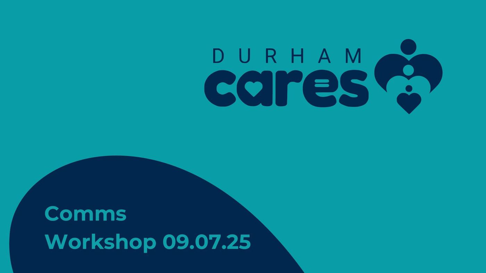

Durham County Council: a film about how Durham cares, made with the people who do it
For Durham’s Families First reforms, we trained a peer researcher to interview staff, young people and families about how Durham shows it cares. The result was a 30-minute documentary and seven short films, launched to staff in March 2026.


The starting point
Durham was bringing in the Families First Partnership reforms, known locally as Durham Cares. It wanted young people’s voices in the reforms, and a way to show its own staff what Durham Cares means in practice. We were already working with Durham on Durham Cares and the Families First Partnership, so the question became how to capture that story in the words of the people living and working it.
What we heard
The research question was simple: how does Durham show that it cares? A peer researcher from Durham’s care leavers team asked it in conversations of about 20 minutes with staff, young people and families. Sessions ran with more than 25 services, from the Director of Children’s Services and the ASYE Academy to independent reviewing officers, Lifelong Links, Mockingbird, a young parents group, a shared meal with unaccompanied young people, and young people in children’s homes.
What we did
- July 2025PlanWho to interview, when, and how consent would work: no consent, no filming
- TrainPeer researcherCoaching to rehearse, record, write questions and run interviews
- 21 to 30 October 2025FilmSix days, 15 hours of interviews and 65 hours of footage
- December 2025Edit and launchA documentary, seven short films and the full interviews; launched to staff on 31 March 2026
How we worked
Peer-led
A peer researcher from Durham’s own care leavers team asked the questions and presents the film.
Every voice in it
The documentary features every voice interviewed, including young people.
Short films for real use
Seven short films, from staff support to putting families first, give teams something they can show in a meeting.
While we were in Durham, we also ran a social media safety workshop for children in care aged 13 and over. Roller banners made for the filming stayed with Durham.
What changed
The films were first shown at Durham’s team managers event on 4 December 2025. Durham put the first film live on 31 March 2026 as part of its Durham Cares launch to staff, alongside an intranet page, Teams backgrounds and branded merchandise, with more short films to follow. Its Principal Social Worker told us the “feedback is great” on the new Teams backgrounds.
See the work

